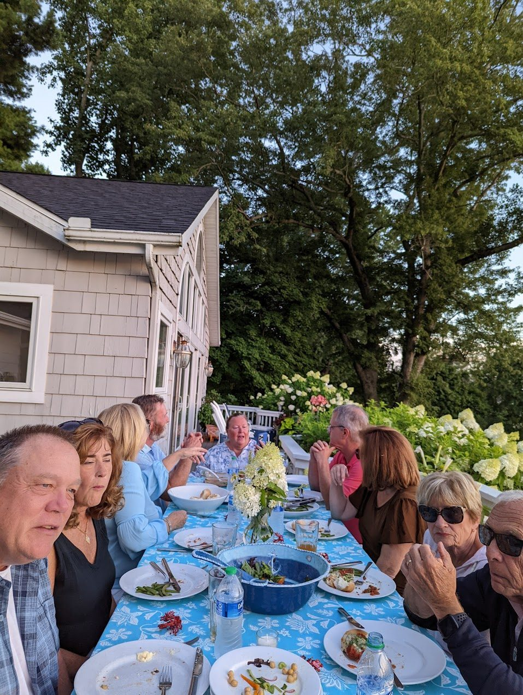

Chautauqua Lake, Western New York · Est. 2002
A cottage on the water, twenty-three summers of friends around the picnic table, and a lake old enough to have watched glaciers retreat.
A Portfolio of Summers
Context & Chronicle
The word Chautauqua comes from the now-extinct Erie language. Because the Erie were defeated in the Beaver Wars before a comprehensive study of their tongue could be made, its meaning remains speculative — the two folk translations are "bag tied in the middle" and "place where fish are taken out." The first is hard to argue with: from height, the lake's two basins are cinched together at a narrow waist between Bemus Point and Stow.
For generations before European settlement, this land belonged to the Senecas — the westernmost and most powerful nation of the Iroquois Confederacy, the Keepers of the Western Door. A well-worn portage path connected Lake Erie to the Chautauqua, linking the Great Lakes trade with the Allegheny and the Ohio river systems. The lake was a hinge in the geography of a continent.
In 1749, the French officer Pierre-Joseph Céloron de Blainville traveled the portage on his grand expedition down the Ohio, burying lead plates to claim the valley for the King of France. The village at the southern end of the lake — where Lucille Ball would be born a century and a half later — still bears his name, worn down into English as Celoron.
Unlike nearly every other significant body of water in the region, Chautauqua Lake does not drain north into the Great Lakes. It drains south — into the Chadakoin River at Jamestown, then into Cassadaga and Conewango Creeks, into the Allegheny, and finally into the Ohio at Pittsburgh. A kayak launched from our dock, if given world enough and time, would eventually pass New Orleans.
At the northern end of the lake, the Chautauqua Institution was founded in 1874 as a summer school for Sunday-school teachers. It grew, quickly, into the namesake of the Chautauqua adult education movement — a nineteenth-century American phenomenon so influential that Theodore Roosevelt called it "the most American thing in America." It still convenes every summer on the same ground.
The Bemus Point–Stow ferry has crossed the narrows in one form or another since the 1850s, when it was a log raft pulled by cable to save settlers a twenty-mile trek around the lake. Upgraded and rebuilt across a hundred and seventy years, the nine-car cable ferry now runs summers only — less a utility than a living piece of the lake's memory.
"From a lakefront cottage, the boat expands our world — to the entire world of the lake."
We moved into the cottage in the summer of 2002, when the children were still small enough to come running down the slope with towels trailing behind them like ship's pennants. We have spent every summer here since. A cottage is not a summer house in the formal sense. A cottage is an outside house — a place where the most important room is the deck, and the most important piece of furniture is the long picnic table on it, around which an enormous number of friends have sat, over an enormous number of barbecues, through an enormous number of long and slow and forgiving evenings.
Twenty-three summers in, we know the rhythm of the place. The Fourth of July is the high holy day, when fireworks rise in overlapping arcs all along the forty-one miles of shoreline — from Mayville at the northern tip, to Bemus Point and Maple Springs in the middle, to Lakewood and Celoron at the south — reflected and doubled on the lake's surface. From a cottage deck you see not one display but a dozen at once. The thunder rolls across the water long after the light has faded. For one evening the whole lake is a single, enormous, improvised theater, and every porch and dock is a seat.
But the Fourth is not my favorite. My favorite is a quiet Monday. The weekend boats have gone home, the water is mine, and there is no one in sight. The lake on a Monday morning is what the lake was before any of us arrived — before the steamers, before the cottages, before the Chautauqua Belle, before even the Erie and the Seneca, back to when a glacier retreated and left behind a long, narrow, doubled trough of water with a hinge in the middle. On a quiet Monday you can believe in that kind of time.
On Sunday mornings the water is flat enough to paddleboard. You step onto the board at our shoreline, push off, and the whole lake receives you silently. You are a small vertical mark on a long horizontal one. Later in the day we take off on the boat, and the world of the cottage — the deck, the slope, the view of our particular cove — becomes something larger. The cottage is a seat; the boat is the range. The lake stops being the backdrop and becomes the country.
A Life on the Water
The cottage has rooms, of course. There are beds and a kitchen and the usual accommodations of indoor life. But the house's real center of gravity is outside: the deck, and on the deck, the long picnic table. It is a table that has grown into its job. Over the years it has held every imaginable summer meal — burgers off the grill, corn husked on the spot, tomatoes still warm from whoever's garden they came from, birthday cakes with candles that the lake breeze was always threatening to blow out. It has held card games and jigsaw puzzles and, more than once, a game of Wingspan played late enough that we finally gave up and read the cards by lantern.

The friends who have sat around that table are the real chronicle of this place. Some have been with us since the first summer. Some are newer. Some came for one weekend and never forgot it. A cottage summer is generous that way. It does not ask much of its guests other than that they be willing to sit a while, take their shoes off, let the afternoon slow down, and stay for one more.
Summers here move to a rhythm that repeats, and it is the repetition that makes it sacred rather than monotonous. The Fourth of July is the high holy day, the lake turned theater, the sky turned chandelier. But the Fourth is not my favorite. My favorite is a quiet Monday, when the weekend boats have gone home and the water is mine and there is no one in sight.
Sunday mornings are for the paddleboard. The water is flat, the sun is still working out what kind of day it wants to be, and for twenty minutes the lake belongs to whoever got up first. Then, later in the day, the boat. Leaving the cottage on the boat is the closest thing I know to walking through a door in your own house and finding a country behind it. Seventeen miles of shoreline, two basins, a cinched waist, a ferry crossing it the way ferries have crossed it since before the Civil War. The lake is not large by the measure of lakes, but from the helm of a boat in the middle of the north basin on a July afternoon, it is as large as any place you have ever been.
Twenty-three summers in, I have a clearer sense of what this place is than I did in 2002. The cottage is not a retreat from the world; it is a particular way of being inside of it. The lake reminds you, every morning, that you live in a landscape older than you, inside a history deeper than your own, among friends and family who arrive and leave and return. The Fourth of July reminds you that you are part of a much larger community, all of them pointing their faces at the same sky. The quiet Monday reminds you that the lake existed long before any of us, and will go on existing long after.
And the picnic table reminds you of the only thing a summer is actually for: to gather the people you love, and to sit with them, outside, for as long as the light will let you.